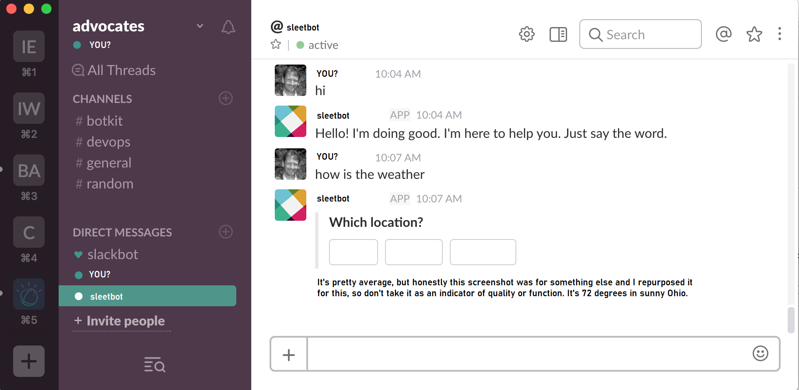

Featured Projects
For more up to the minute work, please visit my GitHub


Cloud Specialist
Ohio
I'm an AWS Certified Cloud Practitioner based in Ohio. I love planning and building in the cloud. I also enjoy creating minimalist, responsive web experiences.
While I'd mostly consider myself a cloud specialist, or a junior cloud engineer, I am also comfortable with
front-end and back-end technologies.
Transitioning into the cloud has allowed me to embrace my "forever learning" mentality and work with the
things I enjoy, which is always exciting!
Here are a few technologies I've been working with recently:
| AWS | JavaScript | Bootstrap |
| CSS | MySQL | Node.js |
| HTML | MongoDB | Python |
| jQuery | Java | D3.js |
Have a project you think I'd be interested in? I occassionally take on freelance opportunities.
damian.dunn@outlook.com